승강기기사 (2017-05-07 기출문제)
1과목: 승강기 개론
1. 에스컬레이터의 특징으로 틀린 것은?
- 기다리는 시간 없이 연속적으로 수송이 가능하다.
- 백화점과 마트 등 설치 장소에 따라 구매의욕을 높일 수 있다.
- 전동기 기동 시 대전류에 의한 부하전류의 변화가 엘리베이터에 비하여 많아 전원설비 부담이 크다.
- 건축상으로 점유 면적이 적고 기계실이 필요하지 않으며 건물에 걸리는 하중이 각 층에 분산 분담되어 있다.
(정답률: 84%)

2. 도어머신의 요구 성능에 대한 설명으로 틀린 것은?
- 가격이 저렴하여야 한다.
- 작동이 원활하고 정숙하여야 한다.
- 승강장에 설치하므로 대형이어야 한다.
- 동작횟수가 엘리베이터의 기동횟수의 2배가 되므로 보수가 용이하여야 한다.
(정답률: 92%)
3. 트랙션비(Traction ratio)를 옳게 설명한 것은?
- 트랙션비는 1.0 이하의 수치가 된다.
- 트랙션비의 값이 낮아지면 로프의 수명이 길어진다.
- 카측과 균형추측의 중량의 차이를 크게 하면 전동기출력을 줄일 수 있다.
- 카측 로프에 걸린 중량과 균형추측 로프에 걸린 중량의 합을 말한다.
(정답률: 77%)
4. 권동식 권상기의 경우 카가 최하층을 지나쳐 완충기에 충돌하면 와이어로프가 늘어나 와 이어로프 이탈과 전동기 과회전 등의 문제가 발생할 수 있으므로 이 와이어로프의 늘어남을 검출하여 동력을 차단하는 장치는?
- 정지 스위치
- 역·결상검출기
- 로프이완 스위치
- 문 닫힘 안전장치
(정답률: 91%)
5. 전동발전기(M-G세트)의 계자를 제어해서 엘리베이터를 제어하는 방식은?
- WWF제어방식
- 교류 궤환제어방식
- 정지 레오나드 방식
- 워드 레오나드 방식
(정답률: 73%)
6. 레일을 죄는 힘이 처음에는 약하게 작용하다가 하강함에 따라 점점 강해지다가 얼마 후 일정한 값에 도달하는 비상정지장치는?
- 즉시 작동형
- 플렉시블 웨지 클램프(F.W.C)형
- 플렉시블 가이드 클램프(F.G.C)형
- 슬랙 로프 세이프티(Slack Rope Safety)형
(정답률: 80%)
7. 전자-기계 브레이크는 자체적으로 카가 정격속도로 정격하중의 몇 %를 싣고 하강방향으로 운행될 때 구동기를 정지시킬 수 있어야 하는가?(관련 규정 개정전 문제로 여기서는 기존 정답인 4번을 누르면 정답 처리됩니다. 자세한 내용은 해설을 참고하세요.)
- 100
- 110
- 115
- 125
(정답률: 83%)
8. 엘리베이터의 설치형태 및 카 구조에 의한 분류에 적합하지 않는 것은?
- 육교용 엘리베이터
- 전망용 엘리베이터
- 선박용 엘리베이터
- 장애자용 엘리베이터
(정답률: 83%)
9. 비상용 엘리베이터의 예비전원은 몇 시간 이상 엘리베이터 운전이 가능하여야 하는가?
- 30분
- 1시간
- 1시간 30분
- 2시간
(정답률: 85%)
10. 2~3대의 엘리베이터를 병설하여 운행관리하며, 한 개의 승강장 버튼의 부름에 대하여 한 대의 카만 응답하여 불필요한 정지를 줄이고 일반적으로 부름이 없을 때에는 다음 부름에 대비하여 분산 대기하는 방식은?
- 군관리방식
- 군승합자동식
- 승합전자동식
- 하강승합전자동식
(정답률: 82%)
11. 미리 설정한 방향으로 설정치를 초과한 상태로 과도하게 유체 흐름이 증가하여 밸브를 통과하는 압력이 떨어지는 경우 자동으로 차단하도록 설계된 밸브는?
- 체크밸브
- 럽처밸브
- 차단밸브
- 릴리프밸브
(정답률: 62%)
12. 엘리베이터용 주로프에 대한 설명으로 틀린 것은?
- 구조적 신율이 커야 된다.
- 그리스 저장 능력이 뛰어나야 한다.
- 강선 속의 탄소량을 적게 하여야 한다.
- 내구성 및 내 부식성이 우수하여야 한다.
(정답률: 78%)
13. 유압식엘리베이터의 사용 장소로 틀린 것은?
- 고층 건물 중간층 간 교통으로 사용한다.
- 일조권과 고도 제한 규제가 있는 곳에서 사용한다.
- 소용량이며 승강 행정이 긴 승객용 엘리베이터에 주로 사용한다.
- 지하나 옥상 주차장으로 자동차를 승강시키는 자동차용 엘리베이터로 사용한다.
(정답률: 75%)
14. 정상 조명전원이 차단될 경우 조명의 조도와 전원을 공급할 수 있는 자동 재충전 예비 전원공급장치의 동작시간으로 옳은 것은?(관련 규정 개정전 문제로 여기서는 기존 정답인 4번을 누르면 정답 처리됩니다. 자세한 내용은 해설을 참고하세요.)
- 1lx 이상, 30분
- 1lx 이상, 60분
- 2lx 이상, 30분
- 2lx 이상, 60분
(정답률: 81%)
15. 가이드레일의 규격을 결정하는데 고려해야 할 요소로 가장 적당한 것은?
- 엘리베이터의 속도
- 엘리베이터의 종류
- 완충기 충돌 시 충격하중
- 비상정지장치 작동 시 좌굴하중
(정답률: 70%)
16. 기계실에 설치되는 콘센트는 몇 개 이상 설치되어야 하는가?
- 1
- 2
- 3
- 4
(정답률: 82%)
17. 점차작동형 비상정지장치의 평균감속도를 구하는 식으로 옳은 것은?
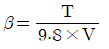
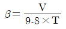
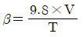
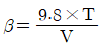
(정답률: 71%)
18. 경사도 a가 30°를 초과하고 35°이하인 에스컬레이터의 공칭 속도는 몇 m/s이하이어야 하는가?(오류 신고가 접수된 문제입니다. 반드시 정답과 해설을 확인하시기 바랍니다.)
- 0.5
- 0.75
- 1
- 1.5
(정답률: 60%)
19. 1:1 로핑에서 2:1 로핑 방법으로 전환하려고 한다. 2:1일때의 로프 장력은 1:1일 때와 비교하면 어떻게 되는가?
- 1/2로 감소한다.
- 1/4로 감소한다.
- 2배로 증가한다.
- 4배로 증가한다.
(정답률: 74%)
20. 기계실 출입문은 보수관리 및 방재를 고려하여 잠금장치가 있는 금속재 문을 설치해야 하는데, 이 출입문의 최소 규격은 얼마인가?
- 폭 0.6m 이상, 높이 1.7m 이상
- 폭 0.7m 이상, 높이 1.8m 이상
- 폭 0.8m 이상, 높이 1.9m 이상
- 폭 0.9m 이상, 높이 2.0m 이상
(정답률: 85%)
2과목: 승강기 설계
21. 엘리베이터의 지진에 대한 대책 중 가장 우선적으로 고려하여야 할 사항은?
- 관제운전장치의 설치
- 가이드 레일에 대한 보강대책
- 승강로 내의 돌출물에 대한 대책
- 주로프의 도르래로부터의 벗겨짐 방지대책
(정답률: 68%)
22. 화물용 엘리베이터의 정격하중은 카의 면적 1m2당 몇 kg인가?
- 100
- 150
- 250
- 300
(정답률: 75%)
23. 전기식엘리베이터에서 카틀 및 카바닥을 설계할 때 비상 시 작용하는 하중으로 고려하지 않는 것은?
- 적재중 하중
- 지진 시 하중
- 완충기 동작 시 하중
- 비상정지창치 작동 시 하중
(정답률: 67%)
24. 유압식엘리베이터의 압력 릴리프 밸브는 압력을 전 부하압력의 몇 %까지 제한하도록 맞추어 조절되어야 하는가?
- 125
- 130
- 135
- 140
(정답률: 60%)
25. 정격속도 1m/s를 초과하여 운행 중인 엘리베이터 카문을 수동으로 개방하는데 필요한 힘은 얼마 이상이어야 하는가?
- 30N
- 50N
- 150N
- 300N
(정답률: 52%)
26. 엘리베이터 감시반에 관한 설명 중 가장 관계가 먼 것은?
- 호기 별 주행, 정지상태와 승강기의 이상 유·무를 표시하기도 한다.
- 많은 대수의 엘리베이터, 에스컬레이터 등을 효율적으로 운전하기 위해 설치한다.
- 보통 중앙관리실에 설치되어 있고, 엘리베이터 고장 시 승객의 안전과 신속한 구출에 큰 목적이있다.
- 여러 대의 승강기일 경우 감시반을 반드시 설치하여야 하며 카에 탑승한 사람의 불필요한 행동을 감시하고 방범활동을 하기도 한다.
(정답률: 79%)
27. 유압식엘리베이터에 있어서 유량제어 밸브를 주회로에 삽입하여 유량을 직접 제어하는 회로는 어느 것인가?
- 파일럿(Pilot)회로
- 바이패스(Bypass)회로
- 미터 인(Meter in)회로
- 블리드 오프(Bleed off)회로
(정답률: 78%)
28. 카자중 2000kg, 적재하중 1100kg인 승객용 엘리베이터의 지진에 의해 카측 가이드레일에 작용하는 하중(P)은 몇 kg인가? (단, P는 가이드레일의 X방향 하중(kg), 저감률은 0.25, 수평진도는 0.6, 상·하 가이드 슈의 하중비는 0.6이다.)
- 586
- 654
- 715
- 819
(정답률: 29%)
29. 기계실의 조명 및 환기시설에 관한 설명으로 옳은 것은?
- 전기조명은 구동기에 공급되는 전원과는 독립적이어야 한다.
- 조도는 배치된 기기로부터 1m 거리에서 100lx 이상이어야 한다.
- 실온은 원칙적으로 40℃초과를 유지할 수 있어야 한다.
- 조명스위치는 쉽게 조명을 점멸할 수 있도록 기계실 제어반 가까이에 설치한다.
(정답률: 73%)
30. 그림과 같은 도르래 장치의 표시로 옳은 것은?
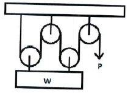
- 2:1 로핑, P=W/2
- 4:1 로핑, P=W/4
- 2:1 로핑, P=W
- 4:1 로핑,P=W/2
(정답률: 74%)
31. 엘리베이터의 수송능력은 일반적으로 몇 분간의 수송능력을 기준으로 하는가?
- 5분
- 10분
- 30분
- 60분
(정답률: 79%)
32. 가이드레일 브래킷에 작용하는 앵커볼트의 인발하중을 옳게 나타낸 것은?
- 앵커볼트의인발하중 ≤ 앵커볼트의인발응력
- 앵커볼트의인발하중 ≤ 앵커볼트의인발응력/2
- 앵커볼트의인발하중 ≤ 앵커볼트의인발응력/4
- 앵커볼트의인발하중 ≤ 앵커볼트의인발응력/6
(정답률: 60%)
33. 로프의 안전계수 12, 최대사용응력 500kg/cm2인 엘리베이터에서 로프의 인장강도는 몇 kg/cm2인가?
- 3000
- 4000
- 5000
- 6000
(정답률: 80%)
34. 카 무게 2000kg, 적재용량 1500kg, 제어케이블무게 50kg, 오버밸런스율 40%, 균형추틀무게 200kg, 조정 웨이트무게 25kg/개, 가감 웨이트무게 50kg/개 일 경우 가감웨이트는 몇 개가 필요한가? (단, 조정웨이트 수량은 1개이다.)
- 42
- 44
- 46
- 48
(정답률: 39%)
35. 동력전원설비 용량을 산출하는데 필요한 요소가 아닌 것은?
- 전압강하
- 주위온도
- 감속전류
- 전압강하계수
(정답률: 59%)
36. 전동기 출력이 15kW, 전부하 회전수가 1200rpm일 때, 전부하 토크는 약 몇 kgㆍm인가?
- 12.2
- 12.5
- 13.2
- 13.5
(정답률: 52%)
37. 예상 정지수 9, 도어 개폐시간 3초, 승객출입시간 32초, 주행시간 55초 일 때 일주시간은 약 몇 초인가?
- 114
- 120
- 125
- 155
(정답률: 44%)
38. 엘리베이터에서 카 틀의 구성요소가 아닌 것은?
- 상부체대
- 하부체대
- 스프링 버퍼
- 브레이스 로드
(정답률: 79%)
39. 길이i, 단면적 A인 균일 단면 봉이 인장하중 W를 받아 λ만큼 늘어났을 때 상관관계를 옳게 나타낸 것은? (단, E는 세로 탄성계수이다.)
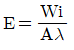
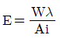
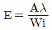
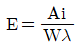
(정답률: 68%)
40. 제어반의 기기 중 전동기 등 사용 기기의 단락으로 인한 과전류를 감지하여 사고의 확대를 방지하고 전원측의 배선 및 변압기 등의 소손을 방지하는 역할을 하는 기기는?
- 전자접촉기
- 배선용차단기
- 리미트스위치
- 제어용계전기
(정답률: 80%)
3과목: 일반기계공학
41. 주조할 때 금형에 접촉된 표면을 급냉시켜 표면은 백선화되어 단단한 층이 형성되고, 금속의 내부는 서냉되어 강인한 성질의 주철이 되는 것은?
- 회 주철
- 칠드 주철
- 가단 주철
- 구상흑연 주철
(정답률: 73%)
42. 다음 그림에서 나타내는 유압 회로도의 명칭은?
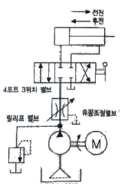
- 시퀀스 회로
- 미터 인 회로
- 브레이크 회로
- 미터 아웃 회로
(정답률: 68%)
43. 알루미늄에 Cu, Mg, Mn을 첨가한 합금으로 경량이면서 담금질 시효경과처리에 의해 강과 같은 높은 강도를 가진 것은?
- 두랄루민
- 바이메탈
- 하이드로날륨
- 엘린바
(정답률: 78%)
44. 합성수지에 대한 일반적인 설명으로 틀린 것은?
- 내화성 및 내열성이 좋지 않다.
- 가공성이 좋고 성형이 간단하다.
- 투명한 것이 있으며 착색이 자유롭다.
- 비중 대비 강도 및 강성이 낮은 편이다.
(정답률: 59%)
45. 30,000Nㆍmm의 비틀림 모멘트와 20,000Nㆍmm의 굽힘 모멘트를 동시에 받는 축의 상당 굽힘 모멘트는 약 몇 Nㆍmm인가?
- 8027
- 14028
- 28027
- 56⑤4
(정답률: 45%)
46. 절삭 각공 시 구성인선(built up edge)을 방지하기 위한 대책으로 틀린 것은?
- 경사각(rake angle)을 작게 할 것
- 절삭 깊이(cut of depth)를 작게 할 것
- 절삭 속도(cutting speed)를 크게 할 것
- 공구의 인선(cutting edge)을 예리하게 할 것
(정답률: 56%)
47. 합금 주철에 포함된 각 합금 원소의 설명으로 틀린 것은?
- Ti은 강한 탈산제 역할을 한다.
- Mo은 흑연화 촉진제 역할을 한다.
- Cr은 흑연화를 방지하고, 탄화물을 안정시킨다.
- Ni은 흑연화를 촉진하고, 두꺼운 주물 부분의 조직이 거칠어지는 것을 방지한다.
(정답률: 56%)
48. 그림과 같은 드럼에서 75Nㆍm의 토크가 작용하고 있는 경우, 레버 끝에서 200N의 힘을 가하여 제동하려면 이 드럼의 지름은 약 몇 mm이어야 하는가? (단, 브레이크 블록과 드럼 사이의 마찰계수(u)는 0.2이고, 그림에서 길이 단위는 mm이다.)
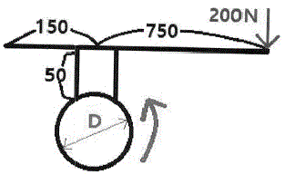
- 475
- 526
- 584
- 615
(정답률: 37%)
49. 다음 중 육면체의 평행도나 원통의 진원도 측정에 가장 적합한 측정기는?
- 각도 게이지
- 다이얼 게이지
- 하이트 게이지
- 버니어 캘리퍼스
(정답률: 71%)
50. 중실 축에 가해지는 토크가 T이고, 축 지름이 d일 때 이축에 발생하는 최대전단응력을 나타내는 식은?
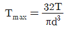
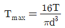
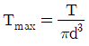
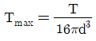
(정답률: 60%)
51. 체인 전동장치의 일반적인 특징으로 틀린 것은?
- 윤활이 필요하다.
- 진동과 소음이 거의 없다.
- 전동효율이 95% 이상으로 좋다.
- 미끄럼이 없는 일정한 속도비를 얻을 수 있다.
(정답률: 78%)
52. 동일재료의 축 A, B의 길이는 동일하고 지름이 각각 d, 2d일 경우 같은 각도만큼 비틀림 변형시키는데 필요한 비틀림 모멘트 비
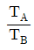
의 값은?- 1/2
- 1/4
- 1/8
- 1/16
(정답률: 57%)
53. 그림과 같이 2개의 연강봉에 같은 인장하중을 받을 때, 각 봉의 탄성변형에너지비 U1:U2는? (단, 그림에서 길이 단위는 mm이고, 왼쪽 봉의 탄성변형에너지가 U1, 오른쪽 봉의 탄성변형에너지가 U2이다.)
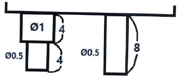
- 3:8
- 5:8
- 8:3
- 8:5
(정답률: 52%)
54. 밀폐된 용기 안에서 유체에 작용하는 압력이 모든 방향으로 동일하게 작용되는 원리는?
- 파스칼의 원리
- 베르누이의 원리
- 오리피스의 원리
- 보일-샤를의 원리
(정답률: 64%)
55. 유효지름 38mm, 피치 8mm, 접촉부 마찰계수가 0.1인 1줄 사각나사의 효율은 약 몇 % 인가?
- 21.4
- 27.7
- 39.8
- 44.2
(정답률: 25%)
56. 다음 중 커넥팅 로드와 같이 형상이 복잡한 것을 소성 가공하는 방법으로 가장 적합한 것은?
- 압현(rolling)
- 인발(drawing)
- 전조(roll forming)
- 형 단조(die forging)
(정답률: 61%)
57. 다음 중 안전율을 가장 올바르게 나타낸 것은?
- 기준강도/허용응력
- 인장강도/항복응력
- 허용강도/인장응력
- 항복응력/인장강도
(정답률: 60%)
58. 불활성 가스를 사용하는 용접법은?
- 심 용접
- 마찰 용접
- TIG 용접
- 초음파 용접
(정답률: 71%)
59. 유압펌프의 종류 중 용적형 펌프가 아닌 것은?
- 기어 펌프
- 베인 펌프
- 축류 펌프
- 회전피스톤 펌프
(정답률: 51%)
60. 다음 중 가장 큰 회전력을 전달시킬 수 있는 키는?
- 납작 키(flat key)
- 둥근 키(round key)
- 안장 키(saddle key)
- 접선 키(tangential key)
(정답률: 65%)
4과목: 전기제어공학
61. 그림과 같은 계전기 접점회로의 논리식은?
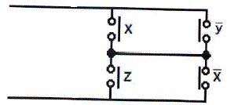
- xz+

- xz+

- (x+
 )(z+
)(z+ )
) - (x+z)(
 +
+ )
)
(정답률: 59%)
62. L=4H 인 인덕턴스에 i=-30e-3t A의 전류가 흐를 때 인덕턴스에 발생하는 단자전압은 몇 V인가?
- 90e-3t
- 120e-3t
- 180e-3t
- 360e-3t
(정답률: 42%)
63. 그림(a)의 직렬로 연결된 저항회로에서 입력전압 V1과 출력전압 V0의 관계를 그림(b)의 신호흐름선도로 나타낼 때 A에 들어갈 전달함수는?
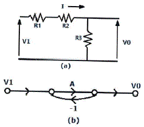
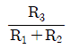
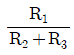
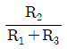
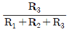
(정답률: 58%)
64. 타력제어와 비교한 자력제어의 특징 중 틀린 것은?
- 저비용
- 구조 간단
- 확실한 동작
- 빠른 조작 속도
(정답률: 55%)
65. 전압, 전류, 주파수 등의 양을 주로 제어하는 것으로 응답속도가 빨라야 하는 것이 특징이며, 정전압장치나 발전기 및 조속기의 제어 등에 활용하는 제어방법은?
- 서보기구
- 비율제어
- 자동조정
- 프로세스제어
(정답률: 56%)
66. 계측기 선정 시 고려사항이 아닌 것은?
- 신뢰도
- 정확도
- 미려도
- 신속도
(정답률: 69%)
67. 광전형 센서에 대한 설명으로 틀린 것은?
- 전압 변화형 센서이다.
- 포토 다이오드, 포토 TR 등이 있다.
- 반도체의 pn접합 기전력을 이용한다.
- 초전 효과(pyroelectric effect)를 이용한다.
(정답률: 55%)
68. 출력의 변동을 조정하는 동시에 목표값에 정확히 추종하도록 설계한 제어계는?
- 타력 제어
- 추치 제어
- 안정 제어
- 프로세스 제어
(정답률: 65%)
69. 다음 (a),(b) 두 개의 블록선도가 등가가 되기 위한 K는?
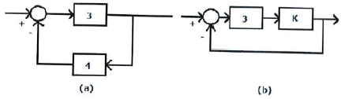
- 0
- 0.1
- 0.2
- 0.3
(정답률: 50%)
70. 콘덴서의 정전용량을 높이는 방법으로 틀린 것은?
- 극판의 면적을 넓게 한다.
- 극판 간의 간격을 작게 한다.
- 극판 간의 절연파괴 전압을 작게 한다.
- 극판 사이의 유전체를 비유전율이 큰 것으로 사용한다.
(정답률: 45%)
71. 공작기계를 이용한 제품가공을 위해 프로그램을 이용하는 제어와 가장 관계 깊은 것은?
- 속도 제어
- 수치 제어
- 공정 제어
- 최적 제어
(정답률: 54%)
72. 제어기기의 변환요소에서 온도를 전압으로 변환시키는 요소는?
- 열전대
- 광전지
- 벨로우즈
- 가변 저항기
(정답률: 72%)
73. 도체를 늘려서 길이가 4배인 도선을 만들었다면 도체의 전기저항은 처음의 몇 배인가?
- 1/4
- 1/16
- 4
- 16
(정답률: 42%)
74. 단상변압기 3대를 Δ결선하여 3상 전원을 공급하다가 1대의 고장으로 인하여 고장난 변압기를 제거하고 V결선으로 바꾸어 전력을 공급할 경우 출력은 당초 전력의 약 몇 %까지 가능하겠는가?
- 46.7
- 57.7
- 66.7
- 86.7
(정답률: 58%)
75. 무인 커피 판매기는 무슨 제어인가?
- 서보기구
- 자동조정
- 시퀀스제어
- 프로세스제어
(정답률: 66%)
76. R, L, C가 서로 직렬로 연결되어 있는 회로에서 양단의 전압과 전류가 동상이 되는 조건은?
- ω=LC
- ω=L2C
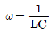
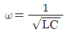
(정답률: 70%)
77. 3상 권선형 유도전동기 2차측에 외부저항을 접속하여 2차 저항값을 증가시키면 나타나는 특성으로 옳은 것은?
- 슬립 감소
- 속도 증가
- 기동토크 증가
- 최대토크 증가
(정답률: 53%)
78. 궤환제어계에 속하지 않는 신호로서 외부에서 제어량이 그 값에 맞도록 제어계에 주어지는 신호를 무엇이라 하는가?
- 목표값
- 기준 입력
- 동작 신호
- 궤환 신호
(정답률: 46%)
79. 논리식 중 동일한 값을 나타내지 않는 것은?(문제 오류로 문제 내용이 정확하지 않습니다. 여기서는 2번을 누르면 정답 처리됩니다. 참고용으로만 이용하세요.)
- X(X+Y)
- XY+
 Y
Y - XY+X

- (X+Y)(X+
 )
)
(정답률: 60%)
80. (3/2)π(rad) 단위를 각도(°) 단위로 표시하면 얼마인가?
- 120°
- 240°
- 270°
- 360°
(정답률: 63%)